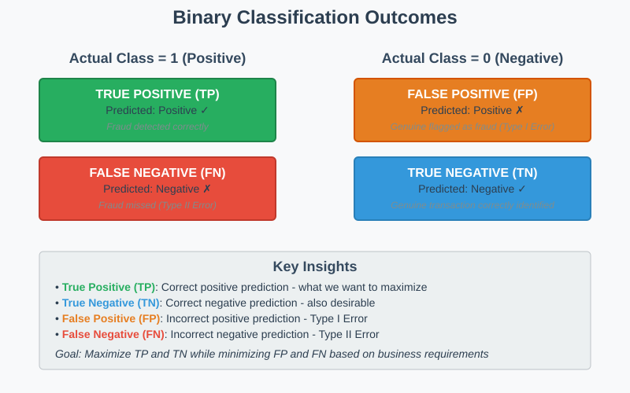
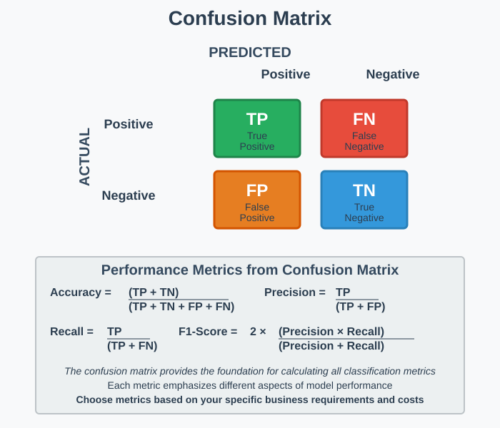
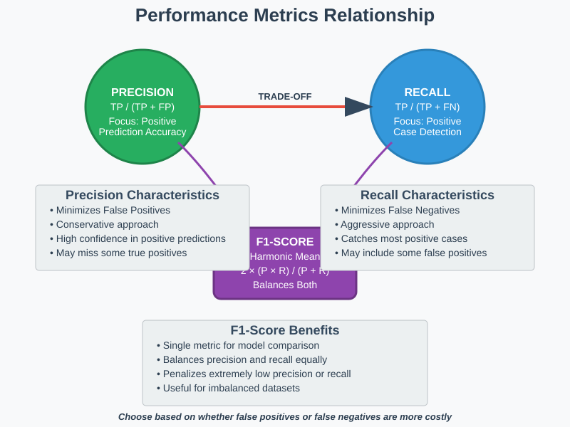
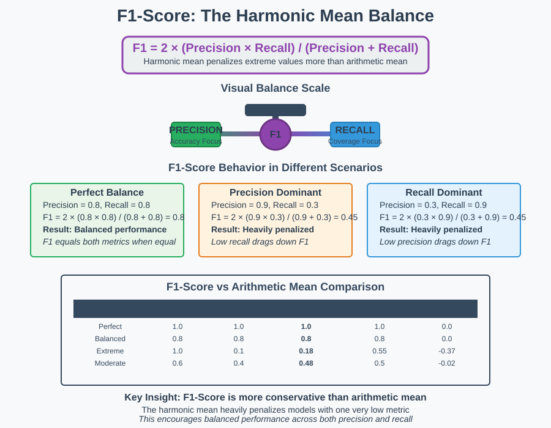
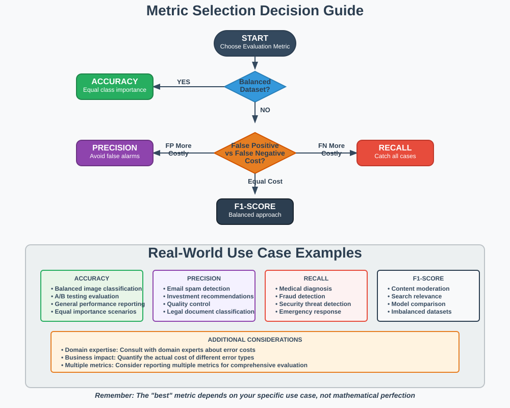

Understanding Performance Metrics: Precision, Recall & F1-Score
📋 Quick Navigation
- 🎯 Classification Fundamentals
- 🔢 Confusion Matrix
- 📊 Performance Metrics
- ⚖️ Accuracy Limitations
- 🎯 Precision Deep Dive
- 🔍 Recall Deep Dive
- 🏆 F1-Score: The Balanced Approach
- 🤔 Choosing the Right Metric
- 💼 Real-World Applications
- 🔗 References & Further Reading
🎯 Classification Fundamentals
Machine learning models in binary classification tasks make predictions that can result in four possible outcomes. Understanding these outcomes is crucial for evaluating model performance effectively.
Core Classification Outcomes
For a binary classification problem with classes 1 (positive) and 0 (negative):
- True Positive (TP): Values that belonged to class 1 and were correctly predicted as 1
- False Positive (FP): Values that belonged to class 0 but were incorrectly predicted as 1
- False Negative (FN): Values that belonged to class 1 but were incorrectly predicted as 0
- True Negative (TN): Values that belonged to class 0 and were correctly predicted as 0

Fraud Detection Example
Consider a credit card fraud detection system:
- True Positive (TP): Fraudulent transaction correctly identified as fraudulent
- True Negative (TN): Genuine transaction correctly identified as genuine
- False Negative (FN): Fraudulent transaction incorrectly identified as genuine
- False Positive (FP): Genuine transaction incorrectly identified as fraudulent
🔢 Confusion Matrix
The confusion matrix provides a comprehensive view of classification performance by organizing predictions into a 2×2 table format.

Matrix Structure
| Predicted | ||
|---|---|---|
| Actual | Positive | Negative |
| Positive | TP | FN |
| Negative | FP | TN |
The confusion matrix serves as the foundation for calculating all performance metrics, providing insight into where the model succeeds and where it struggles.
📊 Performance Metrics
Accuracy
Accuracy measures the overall correctness of the model across all classes.
When to use: Balanced datasets where all classes are equally important.
Precision
Precision measures the accuracy of positive predictions.
When to use: When false positives are costly (e.g., spam detection, investment decisions).
Recall (Sensitivity)
Recall measures the model's ability to identify all positive instances.
When to use: When false negatives are costly (e.g., medical diagnosis, fraud detection).
F1-Score
F1-Score provides a balanced measure combining precision and recall.
When to use: When you need a balance between precision and recall.

⚖️ Accuracy Limitations
Accuracy can be misleading in imbalanced datasets, where one class significantly outnumbers the other.
Medical Diagnosis Example
Consider a dataset with: - 90 healthy patients (negative class) - 10 patients with disease (positive class)
Scenario: Model classifies all patients as healthy
| Metric | Value | Calculation |
|---|---|---|
| TP | 0 | Diseased correctly identified |
| TN | 90 | Healthy correctly identified |
| FP | 0 | Healthy misclassified as diseased |
| FN | 10 | Diseased misclassified as healthy |
| Accuracy | 90% | (90 + 0) / 100 |
Despite 90% accuracy, the model failed to identify any diseased patients—a critical failure in medical contexts.
Why This Matters
High accuracy with poor minority class detection can lead to: - Missed diagnoses in healthcare - Undetected fraud in financial systems - System vulnerabilities in security applications
🎯 Precision Deep Dive
Precision answers: "Of all positive predictions, how many were actually correct?"
Key Characteristics
- Focus: Minimizing false positives
- Trade-off: May miss some true positives
- Goal: Ensure predicted positives are truly positive
Investment Decision Example
Scenario: Stock investment prediction model
When investing significant capital, you want high confidence that predicted "good investments" are actually profitable.
Why Precision Matters: - False positive = losing money on bad investment - False negative = missing good opportunity (less costly) - Better to be conservative and accurate
High Precision Scenarios
- Email spam detection (avoid blocking important emails)
- Medical test confirmations (avoid unnecessary treatments)
- Quality control (avoid accepting defective products)
- Legal document classification (avoid misclassifying critical documents)
🔍 Recall Deep Dive
Recall answers: "Of all actual positives, how many did we correctly identify?"
Key Characteristics
- Focus: Minimizing false negatives
- Trade-off: May increase false positives
- Goal: Catch all positive cases
Medical Screening Example
Scenario: Cancer screening test
Missing a cancer case (false negative) is far more costly than a false alarm (false positive).
Why Recall Matters: - False negative = missing disease (potentially fatal) - False positive = additional testing (manageable cost) - Better to be sensitive and comprehensive
High Recall Scenarios
- Disease screening and diagnosis
- Fraud detection systems
- Security threat detection
- Emergency response systems
- Quality assurance in critical systems
🏆 F1-Score: The Balanced Approach
F1-Score provides the harmonic mean of precision and recall, offering a single metric that balances both concerns.

Mathematical Foundation
The harmonic mean ensures that F1-Score is low when either precision or recall is low, encouraging balanced performance.
F1-Score Behavior
| Precision | Recall | F1-Score | Interpretation |
|---|---|---|---|
| 1.0 | 1.0 | 1.0 | Perfect performance |
| 1.0 | 0.5 | 0.67 | High precision, moderate recall |
| 0.5 | 1.0 | 0.67 | High recall, moderate precision |
| 0.5 | 0.5 | 0.5 | Balanced but moderate performance |
| 1.0 | 0.1 | 0.18 | High precision penalized by low recall |
When to Use F1-Score
- Imbalanced datasets: When classes are not equally represented
- Equal cost concerns: When false positives and false negatives are equally problematic
- Model comparison: When comparing multiple models across different scenarios
- General evaluation: When you need a single metric for overall performance
🤔 Choosing the Right Metric
Selecting the appropriate evaluation metric depends on your specific use case and business requirements.

Decision Framework
| Scenario | Primary Metric | Rationale |
|---|---|---|
| Balanced Dataset | Accuracy | All classes equally important |
| Cost of False Positives High | Precision | Minimize incorrect positive predictions |
| Cost of False Negatives High | Recall | Maximize detection of positive cases |
| Balanced Concerns | F1-Score | Optimize both precision and recall |
| Multiple Classes | Macro/Micro F1 | Aggregate performance across classes |
Industry-Specific Guidelines
Healthcare: Prioritize Recall - Missing a diagnosis is typically more costly than false alarms - Secondary testing can verify positive predictions
Finance: Varies by Application - Fraud detection: High Recall (catch all fraud) - Investment decisions: High Precision (avoid bad investments) - Credit approval: Balanced F1-Score
Marketing: Depends on Campaign - Email campaigns: High Precision (avoid spam classification) - Customer targeting: Balanced F1-Score - Churn prediction: High Recall (retain customers)
💼 Real-World Applications
Case Study 1: Email Spam Detection
Goal: Classify emails as spam or legitimate
Primary Concern: False positives (legitimate emails marked as spam)
Recommended Metric: Precision
Reasoning: Users can tolerate some spam in their inbox, but missing important emails is unacceptable.
Case Study 2: Medical Diagnosis
Goal: Identify patients with a serious condition
Primary Concern: False negatives (missing actual cases)
Recommended Metric: Recall
Reasoning: Missing a diagnosis can be life-threatening; false positives lead to additional (manageable) testing.
Case Study 3: Content Moderation
Goal: Identify inappropriate content on social platforms
Primary Concern: Balanced detection with user experience
Recommended Metric: F1-Score
Reasoning: Need to catch inappropriate content while avoiding over-censorship of legitimate posts.
Case Study 4: Predictive Maintenance
Goal: Predict equipment failures before they occur
Primary Concern: Preventing unexpected downtime
Recommended Metric: Recall
Reasoning: Unexpected failures are extremely costly; scheduled maintenance is manageable.
🔗 References & Further Reading
📚 Essential Papers
- The Precision-Recall Plot Is More Informative than the ROC Plot - Davis & Goadrich
- Learning from Imbalanced Data - Comprehensive survey on imbalanced learning
- A Study of Cross-Validation and Bootstrap - Kohavi, 1995
🛠️ Practical Resources
- Scikit-learn Classification Metrics - Official documentation
- Google's Machine Learning Crash Course - Classification fundamentals
- Towards Data Science: Beyond Accuracy - Practical metric selection
🎯 Advanced Topics
- Multi-class Classification Metrics - Extending metrics to multiple classes
- Cost-Sensitive Learning - Incorporating business costs into model evaluation
🚀 Colab Notebooks
 Scikit-learn Classification Tutorial
Scikit-learn Classification Tutorial
 TensorFlow Imbalanced Data Tutorial
TensorFlow Imbalanced Data Tutorial
🤗 Hugging Face Models
- DistilBERT for Text Classification - Pre-trained sentiment analysis
- RoBERTa for Sequence Classification - Robust text classification model
This documentation provides a comprehensive guide to understanding and applying precision, recall, and F1-score in machine learning projects. For questions or contributions, please refer to the project repository.